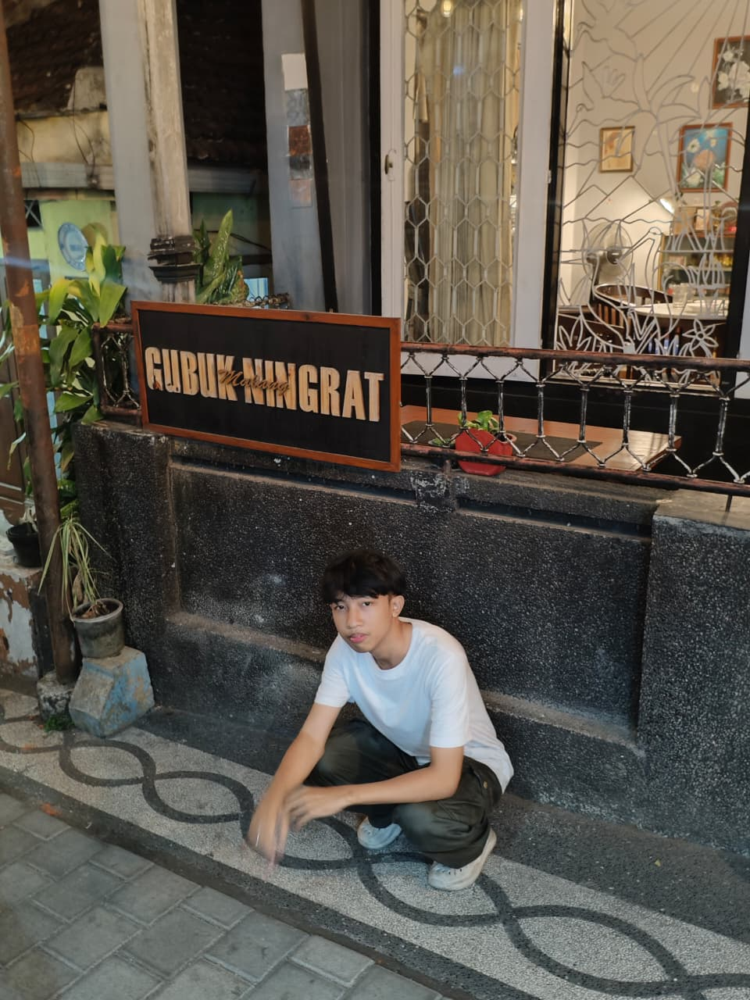
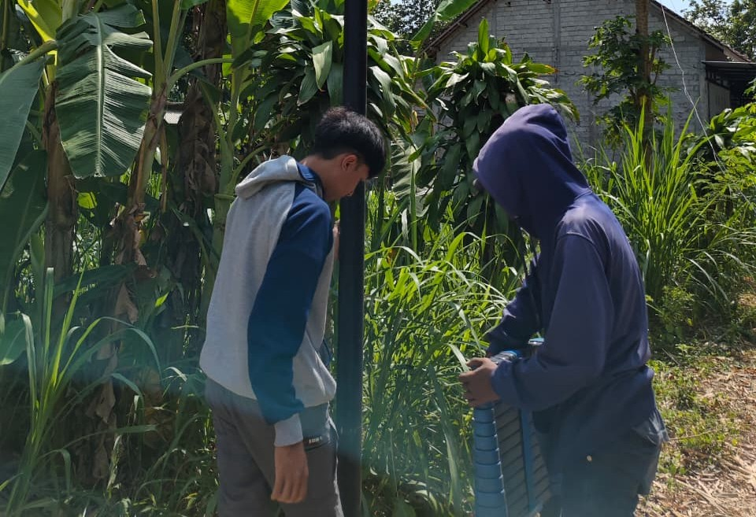
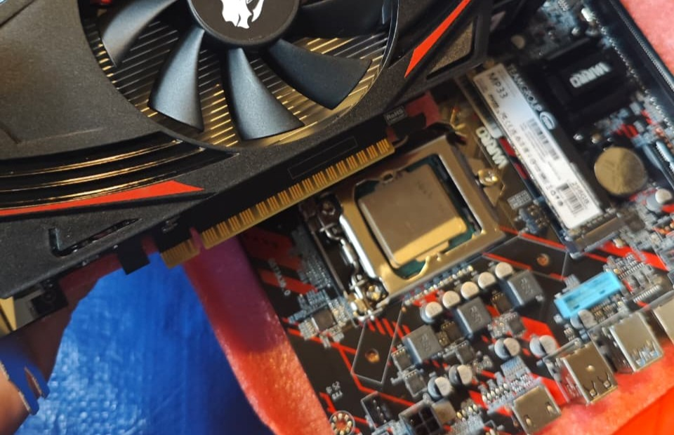
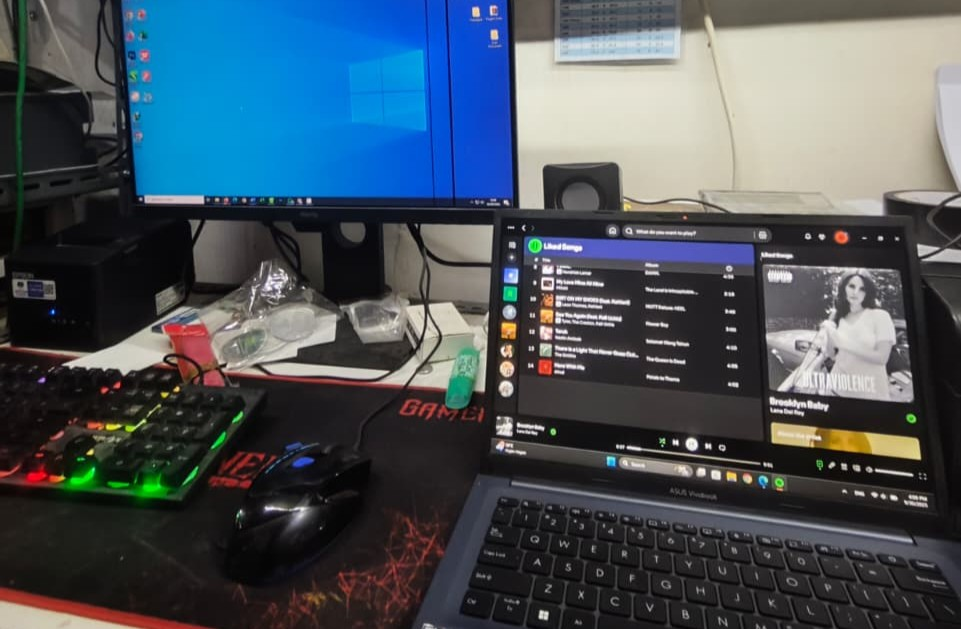

01</>
Programming
Building blocks for digital experiences.
Portofolio
HELLO, I'M
Saya tertarik menghubungkan teknologi, pemrograman, dan kebutuhan bisnis untuk membangun solusi digital yang bermanfaat.

01 / GET TO KNOW ME
Hello! Saya Gading Paribu, mahasiswa Sistem Informasi yang senang mengeksplorasi bagaimana teknologi dapat menyelesaikan masalah nyata.
Saya memiliki ketertarikan pada dunia teknologi, pemrograman, jaringan komputer, pengembangan website, dan bisnis digital. Saya senang mempelajari hal baru, mengembangkan kemampuan teknis, serta membangun solusi digital yang bermanfaat.
02 / WHAT I WORK WITH
Tools dan bidang yang sedang saya pelajari serta kembangkan.
Building blocks for digital experiences.
Understanding connectivity and infrastructure.
Software for learning, building, and testing.
✳ Skills are continuously growing. This portfolio reflects my learning journey.
03 / THE LEARNING PATH
A foundation for curiosity, growth, and new possibilities.
CURRENT EDUCATION
S1 Sistem Informasi · Fakultas Teknik
Mempelajari hubungan antara teknologi informasi, proses bisnis, data, dan pengembangan sistem.
PREVIOUS EDUCATION
SMK NEGERI 3 JOMBANG · 2023 - 2026
Mempelajari Komputer dan bagaimana Network bekerja.
04 / WHERE I'VE LEARNED
PRACTICAL WORK EXPERIENCE
Praktik Kerja Lapangan (PKL)
Mendapatkan pengalaman langsung dalam kegiatan teknis dan operasional di bidang komputer, jaringan, serta perangkat elektronik.



05 / SELECTED WORK
Beberapa proyek dan latihan yang menjadi bagian dari perjalanan belajar saya.
WEB DEVELOPMENT
Website untuk memperkenalkan identitas, kemampuan, pengalaman, dan proyek.
NETWORKING
Latihan konfigurasi jaringan dan perangkat MikroTik.
SYSTEM ADMINISTRATION
Praktik konfigurasi layanan server pada lingkungan virtual.
INSTALLATION
Dokumentasi pembelajaran instalasi dan pengenalan sistem CCTV.
PROGRAMMING
Kumpulan latihan dasar Python, logika, dan pengolahan data.
APP DEVELOPMENT
Konsep aplikasi nomor antrean dengan tampilan nomor dan tombol interaksi.
Catatan: kartu proyek di atas merupakan ringkasan portofolio. Tambahkan tautan demo, repository, dan dokumentasi asli pada setiap proyek sebelum dipublikasikan.
07 / HAVE A GOOD IDEA?
Have a project, collaboration, or opportunity? Feel free to reach out to me.